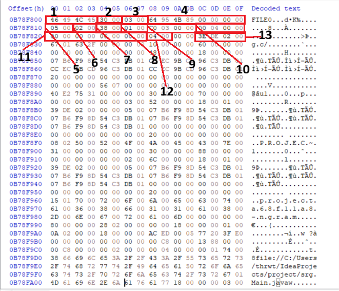
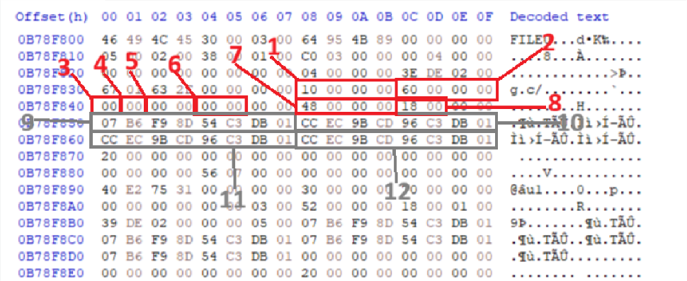
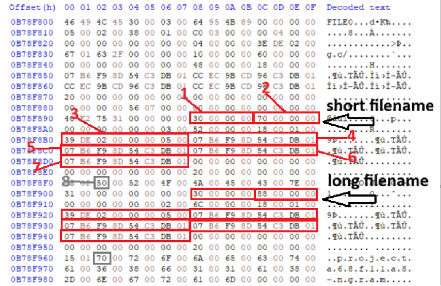

MFT - Master File Table
A practical guide to understanding the NTFS Master File Table (MFT), its record structure, attributes, and forensic significance.
In the NTFS file system, the Master File Table (MFT) , is database containing metadata about every file and directory on the volume. This includes details such as file name, size, creation time, modification time, and even information about deleted files, An MFT record is typically 1024 bytes in size
Let’s take an overview what is the MFT record contain in close
We Just cover only this attrbutes
Each record in the MFT is 1024 bytes in size and contains several key attributes:
Signature — FILE (0x00 - 0x03)
– 0x46494C45: Identifies the record as an MFT entry with the signature “FILE”.STANDARD_INFORMATION(Attr 0x10) (SI) : contains standard file attributes, and the MACB (Modified, Accessed, Changed , Birth) timestamps shown by Windows Explorer.File Name (FN)–0x30:Includes the file or directory name and its parent directory.Data–0x80:Points to the actual file data on disk- Resident Files: For small files (roughly under 700 bytes), the actual file content is stored directly here inside the MFT record itself.
- Non-Resident Files: For larger files, this attribute holds pointers (data runs) directing to the external disk clusters where the data resides.
- End Marker (
0xFFFFFFFF)
Let’s go deeper to more Understand
$MFT file (the whole table)
└─ Record (1024 bytes each)
└─ Record Header (fixed layout, first ~56 bytes)
└─ Fixup Array (sector corruption check)
└─ Attribute 1 ($STANDARD_INFORMATION)
└─ Attribute Header (16 bytes, same for every attribute)
└─ Resident or Non-Resident?
└─ Content (timestamps, filename, file data, or data runs)
└─ Attribute 2 ($FILE_NAME)
└─ same pattern...
└─ Attribute 3 ($DATA)
└─ same pattern, possibly non-resident...
└─ End marker (0xFFFFFFFF) → no more attributesThe FILE Record Header
| Offset (hex) | Size | Type | Field | Explain | HxD |
|---|---|---|---|---|---|
| 0x00 | 4 bytes | ASCII | Signature | Record identifier FILE | 1 |
| 0x04 | 2 bytes | uint16 (LE) | Update Sequence Offset (USA offset) | Tells you where the fixup values live so you can apply them • Suppose the bytes are 0x0030• Update Sequence Array begins at record + 0x30 | 2 |
| 0x06 | 2 bytes | uint16 (LE) | Update Sequence Size (USA count) | Number of 2-byte entries in the fixup array, including the first "USN" entry itself1 + number of sectors in the record• Ex. Suppose your MFT record is 1024 bytes. • 1024 / 512 = 2 sectors • USA Count = 3 Entry 0 → Update Sequence Number (USN) Entry 1 →Original last two bytes of Sector 1 Entry 2 → Original last two bytes of Sector 2 note Why does the Update Sequence Array exist? • When NTFS writes an MFT record to disk, it temporarily replaces the last two bytes of every sector with the USA • Before writing the record to disk, NTFS replaces the last two bytes of every sector with AB CDand saves the original values inside the USA so • Check every sector ends with AB CD.• If one sector doesn't, the record is considered corrupted. | 3 |
| 0x08 | 8 bytes | uint64 (LE) | $LogFile Sequence Number (LSN) | This value references an operation recorded in NTFS's $LogFile journal. | 4 |
| 0x10 | 2 bytes | uint16 (LE) | Sequence Number | Every time an MFT record is reused, this number increases. Record 50 • First file: Sequence = 1 • Second file: Sequence = 2 ——— NTFS file references consist of: Record Number + Sequence Number That help u to see ability to restore data | 5 |
| 0x12 | 2 bytes | uint16 (LE) | Hard Link Count | • Used to flag files with multiple names/links • How many directory entries (hard links) point to this file | 6 |
| 0x14 | 2 bytes | uint16 (LE) | First Attribute Offset | • length of MFT record header • Offset within this record where the first attribute begins (typically 0x38 = 56 for normal records) | 7 |
| 0x16 | 2 bytes | uint16 (LE, bitfield) | Flags | Tells you: is this record live or deleted? Is it a file or folder? • Bit 0 = record in use • Bit 1 = is a directory; • bits 2-3 reserved on some versions for extension records | 8 |
| 0x18 | 4 bytes | uint32 (LE) | Used Size | • actual number of bytes used in this record (real content ends here; rest is padding) | 9 |
| 0x1C | 4 bytes | uint32 (LE) | Allocated Size | Total size of the record (1024 normally) | 10 |
| 0x20 | 8 bytes | uint64 (LE, packed) | Base File Record | • If a file has too many attributes to fit into one MFT record, NTFS creates an extension record. • This points back to the base record. If 0, this is the base record | 11 |
| 0x28 | 2 bytes | uint16 (LE) | Next Attribute ID | • The next attribute ID number that will be assigned if a new attribute is added | 12 |
| 0x2C | 4 bytes | uint32 (LE) | MFT Record Number | The record's own index number (self-reference) — present on NTFS 3.1+ (XP and later) | 13 |
{kind=link}

Attribute Header
- The First Attribute Offset (at MFT header offset 0x14, usually 0x38 / 56) points to the first attribute in the MFT record.
- All attribute offsets are relative to the start of the MFT record (offset 0x00), not relative to the previous attribute.
- Every attribute header contains a Length field (total size of that attribute).
- To find the next attribute:
Common Attribute Header (first 16 bytes — present on every attribute, resident or not)
| Offset (hex) | Size | Type | Field | Explain | HxD |
|---|---|---|---|---|---|
| 0x00 | 4 bytes | uint32 (LE) | Attribute Type Code | Tells what kind of attribute0x10 → $STANDARD_INFORMATION0x20 → $ATTRIBUTE_LIST0x30 → $FILE_NAME0x40 → $OBJECT_ID0x50 → $SECURITY_DESCRIPTOR0x60 → $VOLUME_NAME0x70→ $VOLUME_INFORMATION0x80 → $DATA0x90 → $INDEX_ROOT0xA0 → $INDEX_ALLOCATION0xB0 → $BITMAP0xFFFFFFFF → End Marker | 1 |
| 0x04 | 4 bytes | uint32 (LE) | Attribute Length | • Total size of this attribute (header + content), in bytes • header • content • padding | 2 |
| 0x08 | 1 byte | uint8 | Non-Resident Flag | 0 = resident (content stored inline in this record).1 = non-resident (content stored elsewhere on disk, referenced via data runs) | 3 |
| 0x09 | 1 byte | uint8 | Name Length | • Number of UTF-16 characters in the attribute's name (most attributes have no name, so this is 0). Named attributes are how Alternate Data Streams work If > 0, there's a name to read — this is exactly the mechanism your ADS detection relies on | 4 |
| 0x0A | 2 bytes | uint16 (LE) | Name Offset | • Offset (from start of this attribute) where the name string begins, if Name Length > 0 • Used to read the stream name, e.g. :Zone.Identifier | 5 |
| 0x0C | 2 bytes | uint16 (LE, bitfield) | Flags | Affects how non-resident content must be decoded | |
| 0x0E | 2 bytes | uint16 (LE) | Attribute ID | A unique ID within this record, used internally by NTFS | 6 |
| 0x10 | 4 bytes | uint16 (LE) | Content Length | The actual structural payload data is 72 bytes long. | 7 |
First Attribute Offset is at 0x38. Since our record starts at absolute address 0B78F800, our first attribute starts
{kind=link}

Resident Attribute (flag = 0)
Content is stored directly inside this MFT record.
| Offset (hex) | Offset (dec) | Size | Type | Field | explain | HxD |
|---|---|---|---|---|---|---|
| 0x10 | 16 | 4 bytes | uint32 (LE) | Content Length | Size in bytes of the actual attribute content $STANDARD_INFORMATION | |
| 0x14 | 20 | 2 bytes | uint16 (LE) | Content Offset | Offset from start of this attribute where content begins. Typically 0x18 (24) | |
| 0x16 | 22 | 1 byte | uint8 | Indexed Flag | Whether this attribute is indexed (relevant mainly for $FILE_NAME in directory indices) | |
| 0x18 | 24 | variable | bytes | Content | The actual attribute payload starts here — its internal layout depends entirely on the Attribute Type Code from offset 0x00 |
Non-Resident Attribute (flag = 1)
Content lives elsewhere on disk.
| Offset (hex) | Offset (dec) | Size | Type | Field | Interpretation |
|---|---|---|---|---|---|
| 0x10 | 16 | 8 bytes | uint64 (LE) | Starting VCN | First Virtual Cluster Number covered by this run list (0 unless this is a continuation record) |
| 0x18 | 24 | 8 bytes | uint64 (LE) | Ending VCN | Last Virtual Cluster Number covered |
| 0x20 | 32 | 2 bytes | uint16 (LE) | Data Run Offset | Offset from start of this attribute where the data run list begins |
| 0x22 | 34 | 2 bytes | uint16 (LE, bitfield) | Compression Unit Size | Power-of-2 exponent for compression unit size (0 = not compressed) |
| 0x28 | 40 | 8 bytes | uint64 (LE) | Allocated Size | Total disk space allocated to this attribute (cluster-rounded) |
| 0x30 | 48 | 8 bytes | uint64 (LE) | Real Size | Actual logical size of the data (e.g., real file size — this is what shows up as "file size" in tools) |
| 0x38 | 56 | 8 bytes | uint64 (LE) | Initialized Size | Amount of the stream that's actually initialized with real data (vs sparse/uninitialized tail) |
| 0x40 | 64 | variable | byte stream | Data Runs | A compact, variable-length encoding describing which disk clusters hold the actual data |
$STANDARD_INFORMATION Content Layout (Type Code 0x10)
This is always resident . Once you've computed content_start = attribute_start + Content_Offset here's what's inside, relative to that content start:
| Offset (hex) | Offset (dec) | Size | Type | Field | explain | HxD |
|---|---|---|---|---|---|---|
| 0x00 | 0 | 8 bytes | uint64 (LE) | Created Time | File creation timestamp — this is the "$SI Created" half of your stomping comparison | 9 |
| 0x08 | 8 | 8 bytes | uint64 (LE) | Modified Time (Last Written) | Last content modification | 10 |
| 0x10 | 16 | 8 bytes | uint64 (LE) | MFT Modified Time | • FILETIME — last time the MFT record metadata itself changed | 11 |
| 0x18 | 24 | 8 bytes | uint64 (LE) | Last Accessed Time | Last read access | 12 |
| 0x20 | 32 | 4 bytes | uint32 (LE, bitfield) | File Attributes | Used for things like hidden-file detection -DOS-style flags: Read-only, Hidden, System, Archive | |
| 0x24 | 36 | 4 bytes | uint32 (LE) | Maximum Versions | Versioning support (legacy, rarely used) | |
| 0x28 | 40 | 4 bytes | uint32 (LE) | Version Number | Legacy versioning | |
| 0x2C | 44 | 4 bytes | uint32 (LE) | Class ID | Legacy | |
| 0x30 | 48 | 4 bytes | uint32 (LE) | Owner ID | Used in quota tracking • Links to $Quota index (NTFS 3.0+) | |
| 0x34 | 52 | 4 bytes | uint32 (LE) | Security ID | • Could be cross-referenced for permission analysis • Index into $Secure file — identifies the ACL for this file | |
| 0x38 | 56 | 8 bytes | uint64 (LE) | Quota Charged | Bytes charged against quota | |
| 0x40 | 64 | 8 bytes | uint64 (LE) | Update Sequence Number (USN) | Index into the $UsnJrnl change journal |
$FILE_NAME Content Layout (Type Code 0x30)
A file may contain multiple $FILE_NAME attributes (long name, short DOS name)
First $FILE_NAME Block (Short/DOS Filename Layout)
Second $FILE_NAME Block (Long Filename Layout) , same the short file name U can see that in the image.
| Size | Type | Field | Why it matters | HxD |
|---|---|---|---|---|
| 4 byte | uint64 (LE) | $FILE_NAME Content Layout (Type Code 0x30) | Header identifying the start of the first file name attribute | 1 |
| 4 byte | uint64 (LE) | Size of Attribute | Total length of this resident attribute | 2 |
| 8 bytes | uint64 (LE, packed) | Parent Directory Reference | • Encodes the parent's MFT record number (low 48 bits) + sequence number (high 16 bits) • This is the field your two-pass PathResolver depends on • Used by your PathResolver to walk up the directory tree | 3 |
| 8 bytes | uint64 (LE) | Created Time | The $FN Created half of the stomping comparison | 4 |
| 8 bytes | uint64 (LE) | Modified Time | $FN Modified | 5 |
| 8 bytes | uint64 (LE) | MFT Modified Time | $FN MFT-modified | 6 |
| 8 bytes | uint64 (LE) | Last Accessed Time | $FN accessed | 7 |
| — | UTF-16LE string | Filename | Starting position of short file name | 8 |
{kind=link}

Attribute 3 & $DATA (Offset 0xB78F990)
| Offset (hex) | Size | Type | Field | explain | HxD |
0x00 | 4 bytes | uint32 (LE) | Attribute Type | Identifies the attribute type (0x80 = $DATA) | 80 00 00 00 |
0x04 | 4 bytes | uint32 (LE) | Length | Total length of the attribute including this header (0x0228 = 552 bytes) | 28 02 00 00 |
0x08 | 1 byte | uint8 | Non-resident flag | 0x00 means the file data is resident (stored inside the MFT) | 00 |
0x10 | 4 bytes | uint32 (LE) | Content Length | Size in bytes of the actual payload/file content (0x0018 = 24 bytes) | 18 00 00 00 |
0x18 | 24 bytes | Raw Bytes | Attribute Content | The actual resident file content payload | AC ED 00 05 77 20 3F E0... |